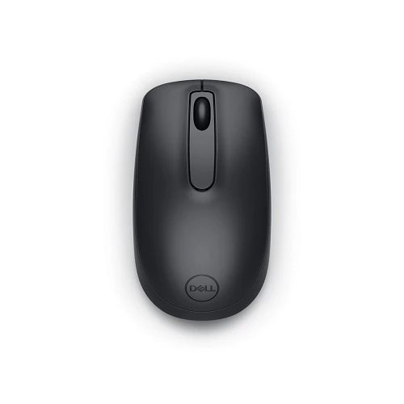
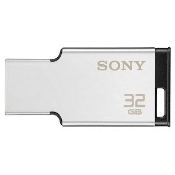

| Product Name |
Make> |
Cost |
Image |
discribtion |
| Mouse |
Dell |
300 |
 |
The Dell Optical Mouse – MS116 features optical LED tracking and wired connectivity providing a stellar performance day after day. Improve your productivity at the office or at home–the Dell Optical Mouse will help keep you on task with accurate 1000 DPI optical tracking. |
| Keyboard |
HP |
400 |
 |
HP keyboards come in various types, including wired, wireless, and mechanical, with features like spill resistance, adjustable tilt, and backlit keys. They are designed for both casual and professional use, with some models specifically for gaming or multi-device connectivity. HP also offers keyboards with recycled materials and antimicrobial coatings |
| pendrive |
sony |
800 |
 |
The Sony USM64MX Metal Body USB Pen Drive, 64 GB is slim and compact USB drives featuring a stylish, shiny white silver metal body. Compact design means it won't block access to adjacent ports, like when using it with a mobile device such as a netbook. |